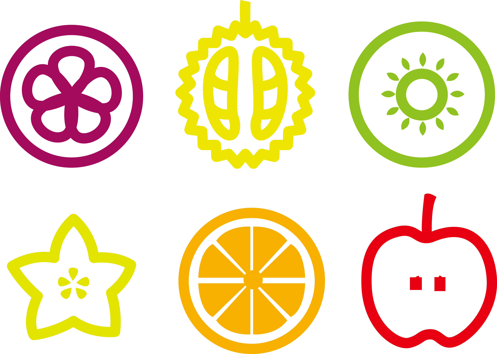
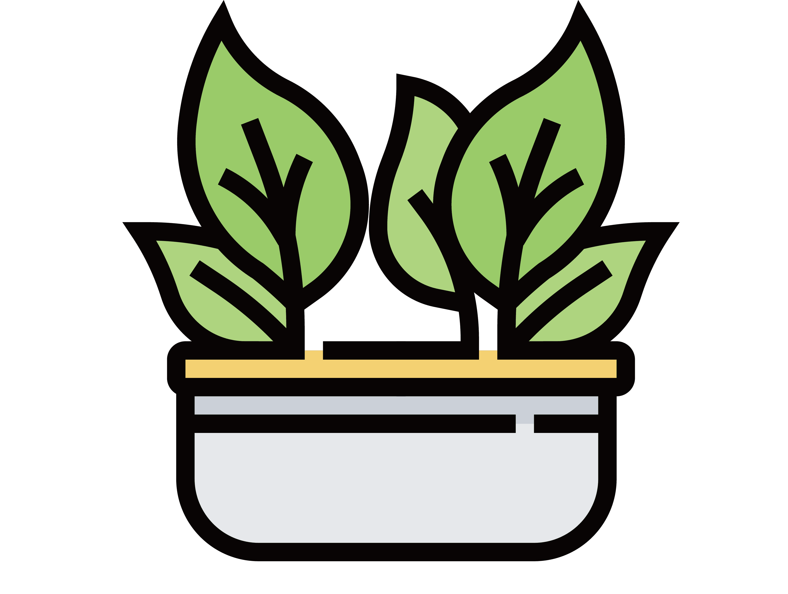

¿Qué ofrecemos?
Nos dedicamos a brindar servicio de comercio electrónico a una empresa de plantas frutales.
¿Cómo lo logramos?
Hacer un estudio de mercado asegurandonos de que nuestros precios son competitivos. Ello no implica necesariamente ser más barato. Es necesario hacer el estudio para tener información y ver las ventajas y desventajas para nuestro negocio y en que podemos mejorar,con pensamientos creativos en identificar las ideas de negocios, además hacer uso de las lluvias de ideas, y sobre todo con buena actitud y mente positiva.
¿A quién ofrecemos nuestro servicio?
Esto se determina en dependencia de que es lo que se hace en tu negocio y de ante mano saber quiénes pueden ser nuestros clientes, sus gustos, necesidades y nuestros posibles competidores. En nuestro caso será para todo público todo el mundo puede cuidar de una planta. Basta con querer hacerlo que les gusta la jardineria es algo my bueno porque ejerce un efecto positivo sobre el estado de ánimo de las personas. Los motivos que mueven a la compra a este sector son, principalmente, decorar la casa, regalar a alguien como un lindo gesto, tienen poder medicinal, nos dan alimentos, entre otros.
¿Innovador?
Es un negocio con apariencia sencilla, amigable con el medio ambiente, son cada vez más las personas que deciden tener una pequeña huerta en su casa. El objetivo es ayudar al medio ambiente y ayudarnos a nosotros mismos.
¿Distinto?

Será diferente porque será una tienda en línea donde nuestros clientes no tendrán que salir de sus casas para realizar sus compras.
¿Atención?
Atenderemos la necesidad de querer mantener sus espacios verdes decorados, en tener sus propios siembros (su pequeña huerta) y consumirlo , en tener sombra en nuestros hogares.
¿Estarían las personas o empresas interesadas en adquirir el servicio?
